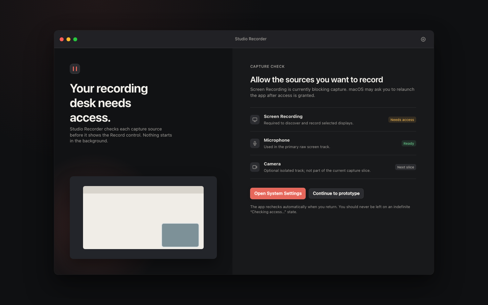
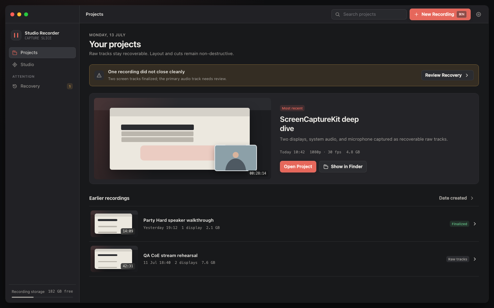
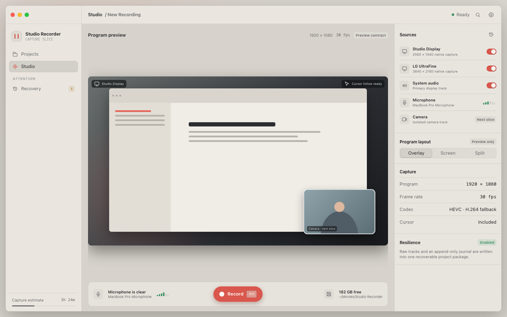
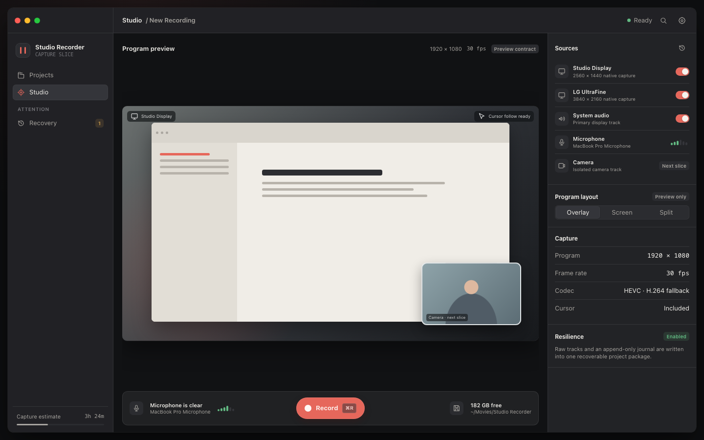
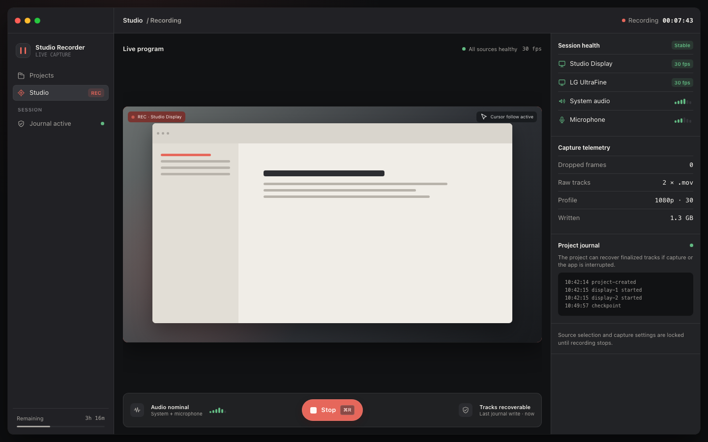
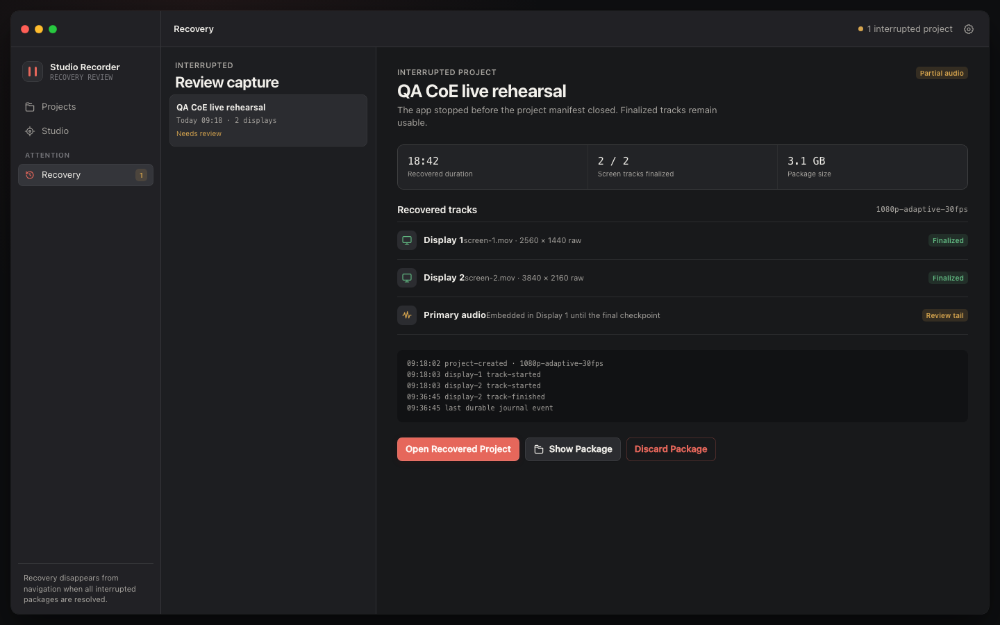
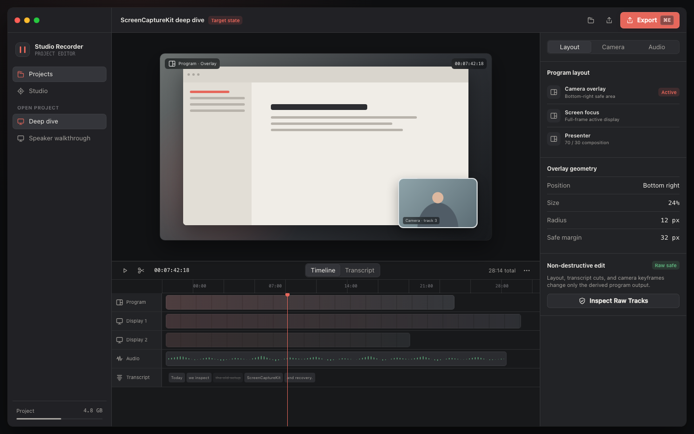
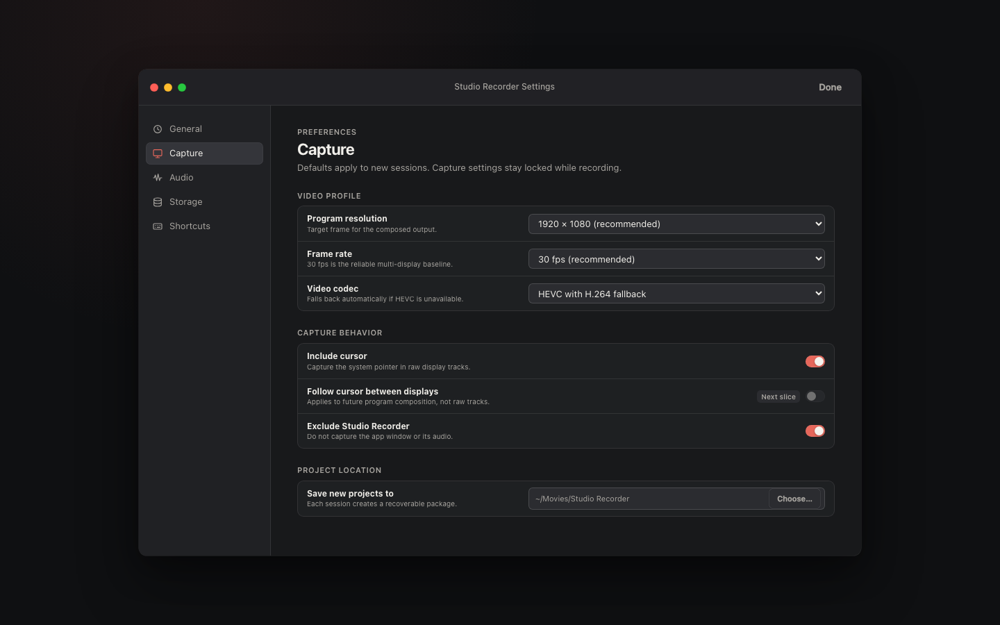

Native macOS · Product / UX
Studio Recorder
Capture first. Non-destructive editing later.
Дизайн-напрямок для зрозумілої, надійної студії запису
Current UX debt
Permission state має пояснювати блокер
Замість нескінченного “Checking…” користувач отримує діагноз і наступну дію.
Назвати permission
Screen Recording, Microphone або Camera.
Дати repair action
Open System Settings без пошуку потрібного меню.
Перевірити повторно
Автоматично після повернення в апку.

Product model
Project — центр продукту
Capture створює durable package. Editor і Recovery працюють з ним, а не з випадковими файлами.
Manifest + journal
Information architecture
Два постійні простори. Решта — контекст.
PROJECTS
Відкрити, продовжити або знайти durable project.
STUDIO
Налаштувати sources, перевірити audio і записати.

Visual system
Студійна тиша. Один сигнал.

DARK PRIMARY
Media first
Темний production desk тримає увагу на preview і timeline.
Studio · Before recording
Ready має відповісти на чотири питання

Що пишемо?
Displays, system audio, microphone.
Що в кадрі?
Великий 16:9 program preview.
Чи є audio?
Live confidence meter перед стартом.
Куди пишемо?
Path, storage headroom, journal.
Studio · Live
Recording показує довіру, не налаштування

під час запису.
Єдина primary action — Stop (⌘R).
Resilience
Recovery — продуктова обіцянка
Не “error”, а точна відповідь: що вижило і що робити далі.

Target state
Editor не змінює raw tracks

Non-destructive
Preview + timeline + inspector
Preferences
Settings фіксують capture-контракт
Не “options soup”, а defaults для нової session.

Implementation order
UI нарощуємо в правильному порядку
Спершу робимо working capture зрозумілим. Лише потім додаємо editing surface.
Permissions
Diagnosis
+ repair action
Studio shell
Stage · sources
recording health
Projects
Discovery
+ Recovery
Editor
Camera · transcript
export · streaming
Decision
Спершу зробити запис зрозумілим
Схвалити project-centric напрямок і перейти до capture shell.
Permission diagnosis
Прибрати indefinite checking.
Studio ready / recording
Stage, sources, health, Stop.
Projects + Recovery
Відкрити durable package.